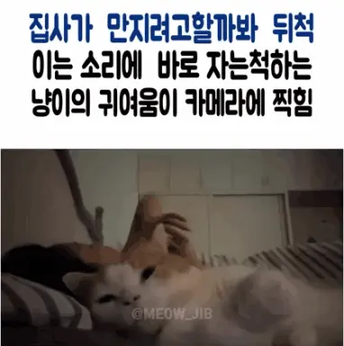
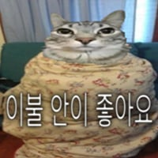
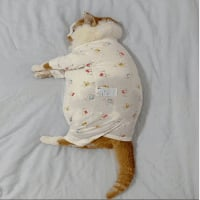

자는척하는 고양이
댓글
자고있어도 만질건뒈~
이 닝겐이 날 막 만져써요

자고있으면 두배로 만질건데~

진짜 너무 사랑스럽다
배방구 간닷!!

자는척은 아니고 쫄아서 움찔하는거
움찔보단 갸르릉 준비중일꺼같은데
울집 멍뭉이들도 배 긁어줄려면 미리 눈 감고 긁힐준비함

기여워

자고있어도 만질건뒈~
이 닝겐이 날 막 만져써요
자고있으면 두배로 만질건데~

진짜 너무 사랑스럽다
배방구 간닷!!

자는척은 아니고 쫄아서 움찔하는거
움찔보단 갸르릉 준비중일꺼같은데
울집 멍뭉이들도 배 긁어줄려면 미리 눈 감고 긁힐준비함
기여워
커여워